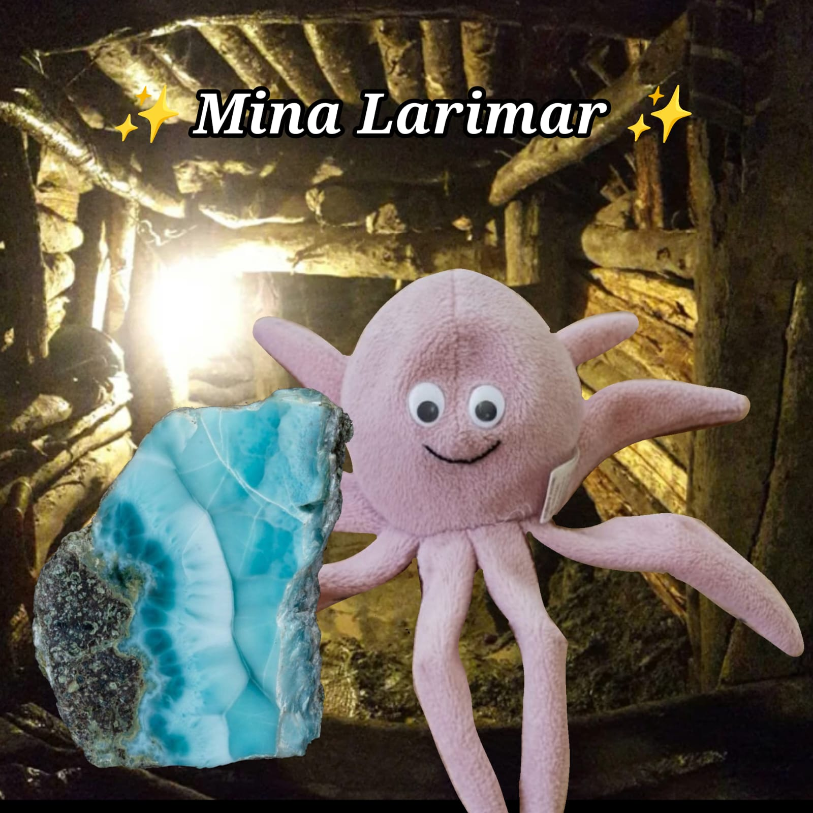
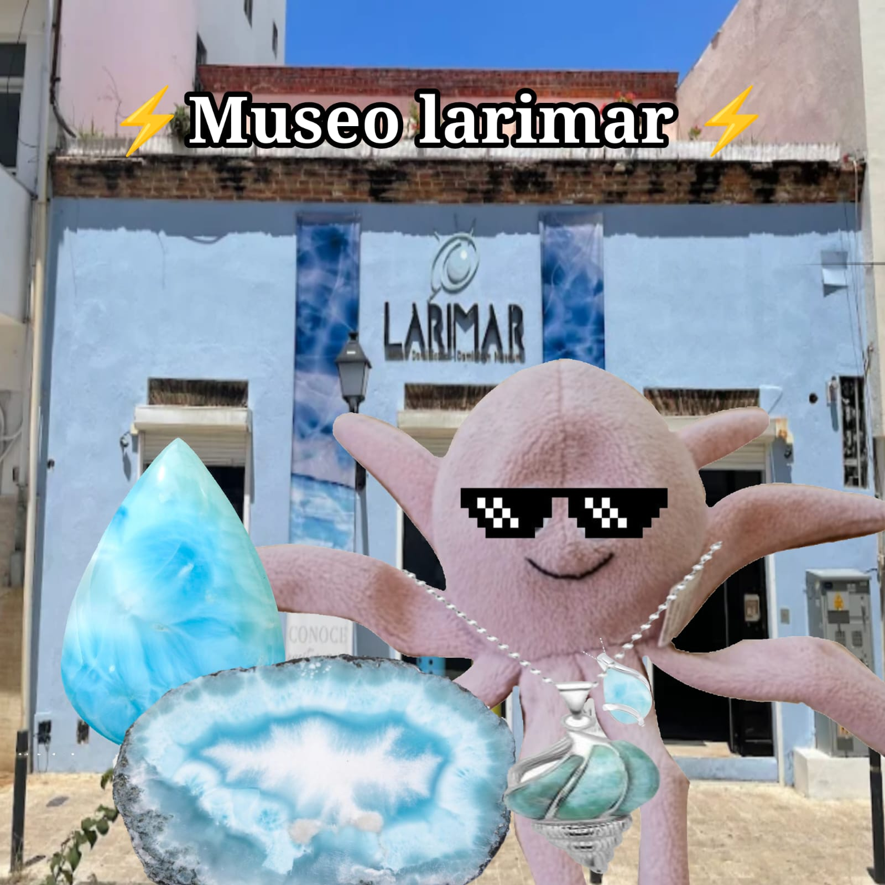
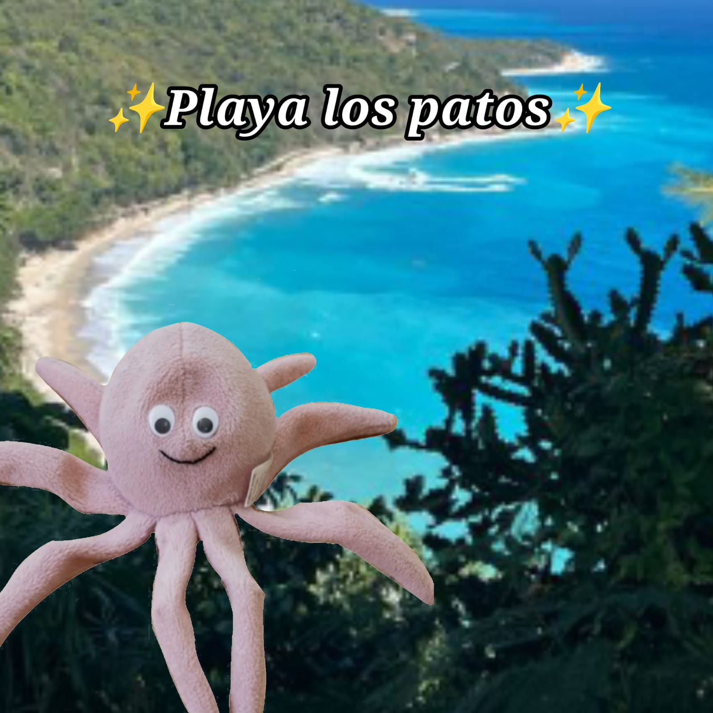
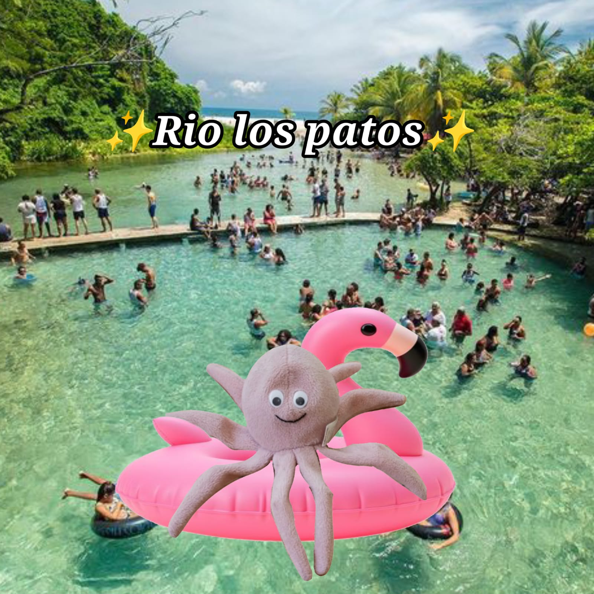
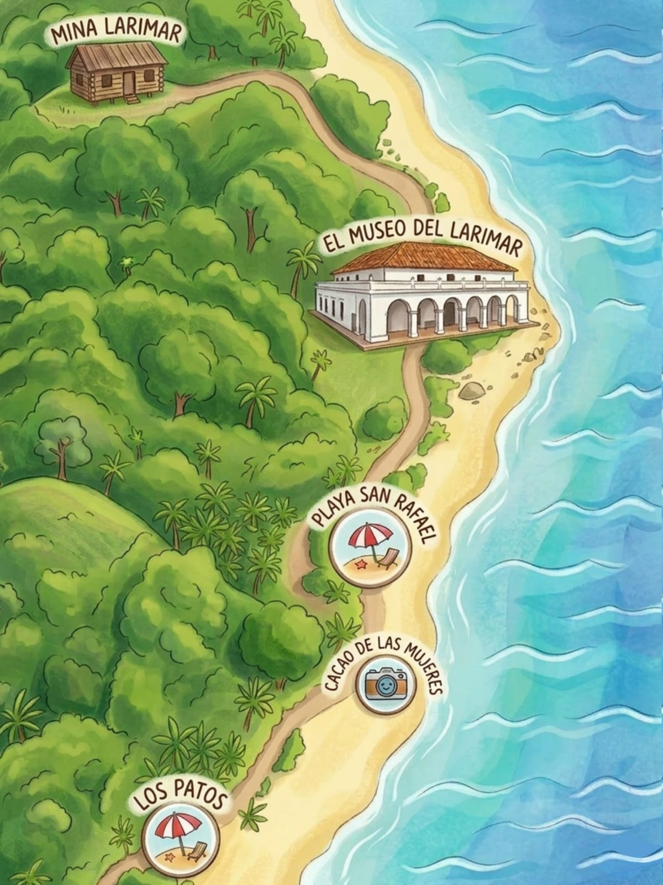

Barahona, conocida como la perla del sur, es un destino donde se encuentran montañas imponentes, playas vírgenes, ríos cristalinos y una naturaleza salvaje e intacta. Ven a descubrir paisajes únicos y experiencias que te conectan con el Caribe auténtico. ¡No te lo pierdas!

Descubre el tesoro azul de la isla
La Mina de Larimar es el único yacimiento conocido en el mundo donde se extrae el larimar, una piedra semipreciosa de tonos azules y blancos que parece guardarle el color del Caribe. El acceso suele hacerse con guías locales: desde fuera podrás ver las montañas y los túneles, aprender el proceso de extracción artesanal y apreciar el esfuerzo que hay detrás de cada joya.

Historia, ciencia y taller en un mismo lugar
Visita el Museo Larimar para conocer la historia de la piedra: cómo se descubrió, por qué toma su color (la presencia de ciertos minerales) y las técnicas de tallado y pulido. Es un plan ideal para familias curiosas: exposiciones, piezas en bruto y joyas terminadas muestran todo el recorrido del material, desde la roca hasta la vitrina.

Donde el río se encuentra con el mar
Playa Los Patos es un lugar singular: el río corta la playa y sus aguas dulces se mezclan con el mar, creando un espectáculo natural. Sus áreas de arena dorada y aguas relativamente calmadas son perfectas para relajarse, tomar el sol y disfrutar de vistas panorámicas del Caribe. Para quienes gustan de explorar, el balneario y la playa ofrecen pequeños puestos de comida local y oportunidades para baños frescos en el río.

Un río corto, pero memorable
El Río Los Patos es uno de los ríos más cortos de la región y destaca por sus aguas cristalinas que desembocan a pocos pasos de la playa. Sus orillas verdes, formaciones rocosas y la fauna local lo convierten en un lugar ideal para caminatas suaves y baños refrescantes en familia.
Mañana — Mina de Larimar
Llegada y breve explicación de seguridad. Recorrido por miradores y zona exterior (siempre con guía).
Mediodía — Museo Larimar
Almuerzo ligero. Visita al museo para entender la historia, ver piezas y, si hay talleres, ver a artesanos trabajar.
Tarde — Playa Los Patos & Río
Disfruta la mezcla río-mar: baños, fotos panorámicas y tiempo para probar pescados o antojitos en los puestos locales.
Para concluir compra joyas y artesanías hechas por artesanos dominicanos; pregunta siempre por la procedencia y el certificado (así apoyas a la comunidad local).
Reserva un guía local para la mina: muchos tours parten desde Barahona y conocen caminos y condiciones.
Las minas son áreas de trabajo; respeta las señales y a los mineros. En playas y ríos, evita el plástico y no recojas fauna ni flores.
El larimar auténtico proviene de la extracción local; verifica que las piezas estén pulidas y, si es posible, pide información sobre el artesano o el taller. Algunas regulaciones locales protegen la comercialización del larimar — es mejor comprar en puntos autorizados o tiendas recomendadas.
Aprende una frase en criollo local para saludar a los artesanos: un gesto amable abre muchas puertas.
Lleva una libreta o el celular para anotar nombres de artesanos y talleres: así, si te enamoras de una pieza, podrás volver a buscar al creador.
Si viajas con niños: convierte la visita en una búsqueda del “azul del océano”; juegos sencillos hacen el recorrido más entretenido.

Mapa turístico con algunos de los lugares más importantes de Barahona y sus alrededores.